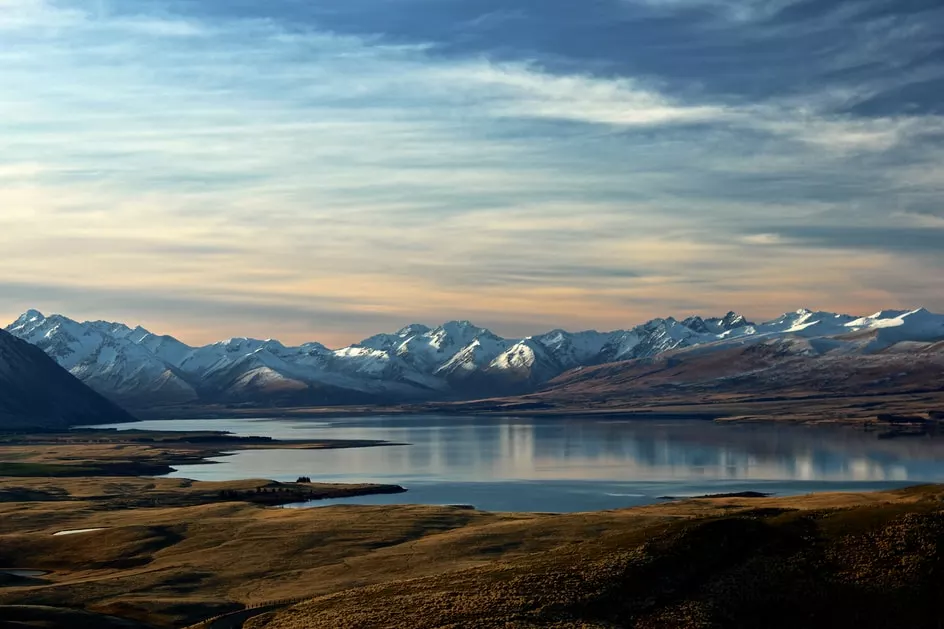

День 1
25 км
Сегодня нам предстоит миновать деревушку Кучерла, которая является последним населенным пунктом в сторону горы Белуха и подняться на перевал Кузуяк (высота 1 513 м).
Спускаемся с перевала к реке Ак-Кем. «Ак-Кем» переводится с тюркского как «белая вода». И действительно, вода в реке имеет молочно-белый оттенок. Ночь проведем в палатках на высоте 1100 м.
